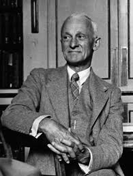
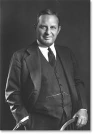
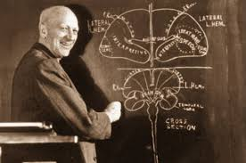
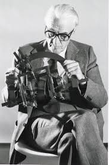
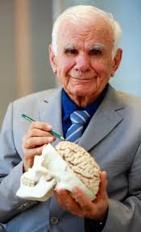
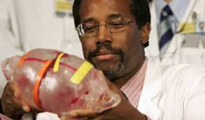
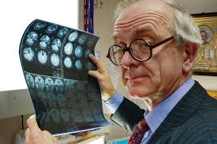
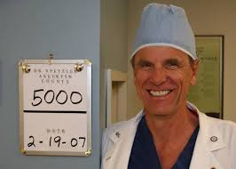
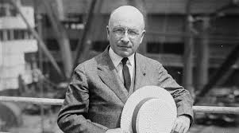

Uznawany za ojca współczesnej neurochirurgii. Pionier operacji mózgu i badacz nadciśnienia wewnątrzczaszkowego.

Wprowadził techniki operacyjne w leczeniu wodogłowia i rozwój radiografii mózgu.

Twórca techniki mapowania mózgu podczas operacji padaczki, współtwórca homunkulusa Penfielda.

Twórca noża gamma – metody leczenia guzów mózgu za pomocą promieniowania.

Twórca nowoczesnej mikrochirurgii w neurochirurgii, wprowadził metody operacyjne w leczeniu tętniaków.

Przeprowadził pierwszą udaną operację rozdzielenia bliźniąt syjamskich złączonych głowami.

Znany z nowatorskich technik operacyjnych w leczeniu nowotworów mózgu oraz autor książek popularyzujących neurochirurgię.

Ekspert w operacjach na malformacjach tętniczo-żylnych oraz tętniakach mózgu.

Chociaż znany głównie jako chirurg i noblista, jego prace nad technikami mikrochirurgii miały ogromny wpływ na rozwój neurochirurgii.

Specjalista w chirurgii rekonstrukcyjnej czaszki, zaangażowany w globalne inicjatywy neurochirurgiczne.